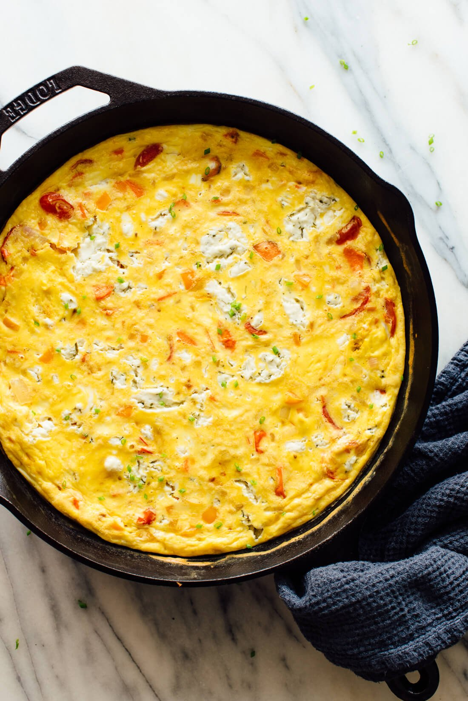

Frittata

Description
When it comes to dishes that are worth mastering, the humble frittata is
at the top. After all, was there ever a more adaptable, crowd-pleasing
recipe? Frittatas can be whipped up quickly and cheaply, be eaten hot or
at room temperature, and allow you to use up practically any ingredient
you happen to have on hand.
Ingredients
- Eggs
- Milk
- Any other toppings of your choice
Steps
-
Pre-heat your oven to 350 degrees first so it's up to temperature when
you're ready to transfer your skillet from the stovetop.
-
Use a skillet with an oven-safe base and handles. Some people prefer the
consistent heat of cast iron, while others like the cooking and cleanup
ease of nonstick. A 10- or 12-inch skillet is the right size for a 6- to
8-egg frittata.
-
Pre-cook ingredients first. You want to sauté most of your frittata
add-ins (with a few exceptions like fresh herbs and tender greens such
as spinach) before the eggs are added. Raw vegetables like onions and
zucchini (which are mostly water) will leach liquid into the mixture,
and meats like sausage and bacon are always better browned. Fully cook
ingredients like potatoes.
-
Add dairy to you egg base. For custardy, rich frittatas, whisk
"pourable" dairy like whole milk, cream, sour cream, or even unflavored
yogurt into your eggs.
-
Add the egg mixture to the skillet once the add-ins are cooked. Use a
spatula to combine everything, cook the mixture for a couple minutes,
and then transfer it to the hot oven.
-
Keep an eye on your frittata while it's cooking. Cooking times can vary
widely depending on how many add-ins you've got, how hot they are going
into the oven, and what kind of skillet you're using. In a 350-degree
oven, an 6-egg frittata will take somewhere between 8-20 minutes, so
keep an eye out and remove the frittata when it's just set. (When you
get it just right, make note of how full to the top the skillet was and
how many minutes it cooked so you have a better sense of the timing for
the next time.